Recuris：面向长程智能体框架的递归经验记忆-工作记忆演化
《Recursive Experiential-Working Memory Evolution for Long-Horizon Agent Harnesses》由 Zhaochen Yu 等人完成，一作主机构为新加坡国立大学，合作机构包括斯坦福大学、牛津大学和普林斯顿大学。论文于 2026 年 8 月 25 日提交至 arXiv，主类别为 LLM，关注长程 Agent、工作记忆、技能调用与外部记忆演化。论文入口为 arXiv:2608.24876，作者给出的 Recuris 官方代码仓库 已核验可访问。
长程任务中，持续增长的交互历史会遮蔽当前任务状态，使智能体难以持续看见未完成目标，也难以在真正需要的执行时刻调用正确经验；而单一的最终成败信号又无法指出应当修复技能、工作状态、调用策略还是验证器。
1. 背景和问题
Agent 的能力越来越多地由模型外部的 harness 决定：它维护上下文和记忆，决定何时把技能放入提示，代理工具交互，并判断任务是否真正完成。短任务里，这些职责常可被一段系统提示或完整对话历史勉强承担；长程任务却会不断产生新目标、阻塞条件、工具回执和失败分支。初始指令只描述起点，越往后越不能代表“现在还缺什么”；完整历史则同时混入已经完成的步骤、过期信息、未解决要求和执行噪声。于是问题并非 Agent 没有积累经验，而是缺少一个紧凑、可信、持续更新的当前状态，用来把经验与当前执行需求对齐。
已有 experiential memory 往往更重视“存什么”：把成功轨迹蒸馏成 workflow、把失败总结成 lesson、把可复用程序写成 skill。调用侧却常见两种粗粒度路线：任务开始时按初始指令检索一次，或者把整套技能长期放在上下文里交给模型自选。前者看不到执行中才出现的需要，后者不但增加上下文，还把“是否调用、调用哪条”重新交还给容易丢失状态的模型。论文提出的关键区分是：读取知识和完成动作不是同一件事。Agent 可能已经查询到正确政策，却没有执行必须的数据库写操作；也可能口头承诺任务完成，但环境中没有任何成功回执。长程失败因此更像执行控制缺口，而不只是语义检索缺口。
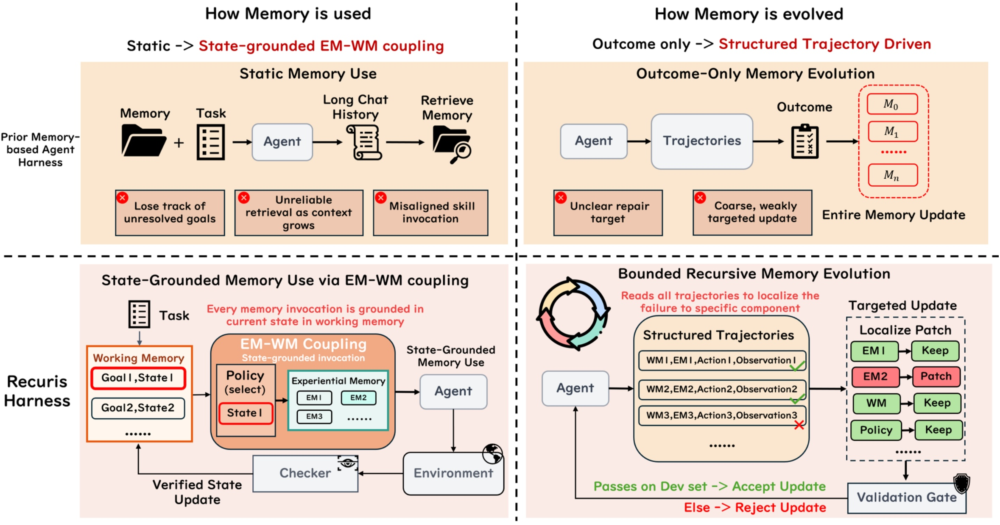
Figure 2 把论文的两个设计转向并排呈现。左侧讨论“记忆如何被使用”：传统 harness 依赖初始任务或不断增长的聊天历史，容易丢掉尚未解决的目标，也容易在错误时刻注入技能；Recuris 则在明确的执行事件触发检索，并让 checker 依据环境返回值更新 verified state。右侧讨论“记忆如何演化”：传统路线常从一次任务成败重写整份记忆，Recuris 记录结构化轨迹，把失败定位到经验记忆、工作状态、调用策略或 checker，再只修改被牵涉的组件，最后通过 held-out 验证门决定是否接纳。这张图不是完整算法图，而是问题边界：一个修复“什么时候用经验”，另一个修复“失败后究竟改哪里”。
第二个难点来自改进信号。最终 reward 只能说明一轮运行成功或失败，却不能回答错误属于技能内容、状态字段、触发时机，还是把未完成误判为完成的 verifier。若直接让 Meta-Agent 根据终局结果重写整个 harness，更新表面很大，证据却很弱，很难解释收益来自哪里，也很难回滚。Recuris 因而把每一步的工作状态、选中技能、动作、观察、候选状态和 checker 判定全部记录下来，让“轨迹”从聊天日志变成组件可定位的诊断证据。
这项工作与推荐系统的联系不在于它做了推荐实验，而在于它提供了一种可迁移的持久 Agent 控制层。面向对话推荐、购物助手、广告投放 Agent 或运营自动化，系统同样需要区分用户已经确认的约束、仍待完成的目标、已执行和未执行的外部动作，并在恰当节点读取经验。论文的价值是把这类需求形式化为可验证状态和受限更新；但其结论只来自工具对话、技能复用和终端任务，不能直接外推为线上推荐指标提升。
从相关工作脉络看，Recuris 同时回应了三条路线的缺口。经验记忆与 Agent Skills 已能把代码、workflow、失败经验或 thought template 持久化，但通常没有可靠的执行状态来约束调用；StateAct、Magentic-One、StructAgent 等工作会维护显式 state 或 ledger，但状态常由模型自行声明，或只服务下一步动作，没有继续连接可复用程序经验；recursive self-improvement 则多以总分或模型自评接纳更新，常见“发现失败的粒度”和“实际改写的粒度”不一致。Recuris 将三者接成闭环：状态选择经验，工具证据验证状态，结构化轨迹再约束记忆更新。
同时，这里的 recursive self-improvement 需要保守理解。它没有让模型重写自身参数，也没有允许 Meta-Agent 任意修改工具权限、运行时或验证逻辑；可变化的只是外置四组件 memory。这样的 scope 牺牲了开放式自我改造能力，却换来 attribution、rollback 和跨模型复用。研究问题因此可以拆成三个可检验命题：verified state 是否比纯经验库更能减少长程漏写；structured trace 是否比 outcome 或普通 transcript 更能定位责任组件；局部 patch 是否能在不接触 test 数据的条件下迁移到新任务和新 backbone。后面的实验并非每一项都同样强，尤其单任务 adaptation 与小 dev gate 仍有明显统计边界。
2. 方法
2.1 四组件 Skill Memory 与结构化执行轨迹
符号解释：Recuris 以冻结策略模型为核心，把可学习表面放在外部 memory-control layer。$x$ 是任务，$h_t$ 是截至步骤 $t$ 的交互历史，$w_t$ 是经验证的工作状态，$E_t$ 是本步实际进入上下文的技能集合，$\pi_\theta$ 是参数 $\theta$ 固定不变的 LLM，$a_t$ 是消息或工具调用，$o_t$ 是工具或用户环境的返回。式（1）的重点不是动作采样本身，而是明确 $w_t$ 与 $E_t$ 都由 harness 控制，因此改进行为不要求更新模型权重。
符号解释：$k$ 表示演化轮次；$\mathcal{E}_k$ 保存可复用经验技能；$\mathcal{W}_k$ 定义工作状态的 schema 与候选更新方式；$\rho_k$ 决定触发事件和技能检索键；$\mathcal{C}_k$ 是依据环境证据判定状态变化是否成立的 checker 集合。这四项同时定义了系统能改什么，也定义了不能改什么：基础模型、工具、Meta-Agent、定位程序、patch 程序和外层验证门都固定。
符号解释：为了让失败可定位，普通动作-观察轨迹被扩展为结构化证据；$\widetilde{w}_{t+1}$ 是候选状态，$c_t$ 是 checker 的逐项判定，$w_{t+1}$ 是固定 kernel 真正提交后的状态，$L_k$ 是本轮轨迹长度，$y_k$ 是终局成败。与只保存 $(a_t,o_t)$ 的 transcript 相比，$\Gamma_k$ 能暴露“当时状态认为缺什么、为什么调用这条技能、动作后提出了什么进度、哪条证据被接纳或拒绝”，为后续组件级诊断提供可审计链路。
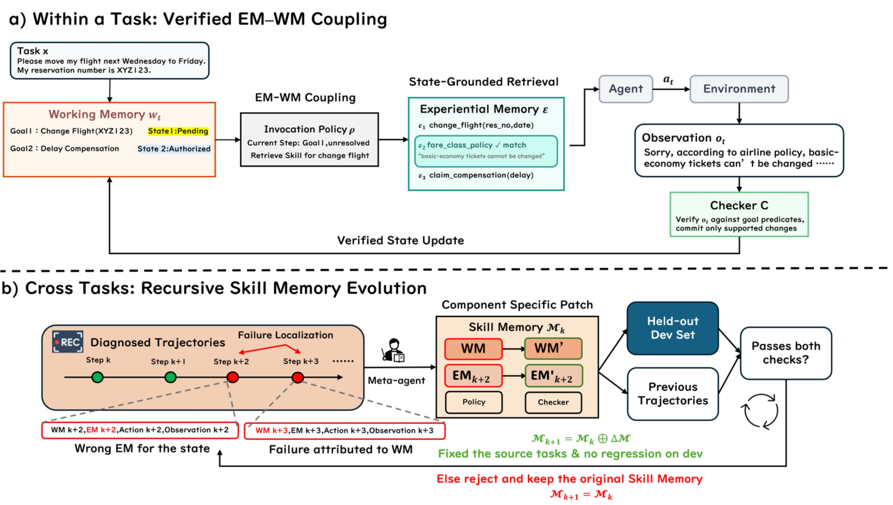
Figure 3 的上半部分是任务内闭环：Working Memory 保存每个 goal 的 verified state，调用策略在执行事件发生时从 Experiential Memory 取出匹配技能，动作完成后 checker 只允许观察所支持的变化进入下一状态。下半部分是跨任务闭环：Meta-Agent 读取结构化轨迹，把故障归到四个 memory component 中，再生成局部 patch；候选不仅要修复 source task，还不能破坏 held-out dev anchors。图底部强调“base agent、outer loop、Meta-Agent 都固定”，所以所谓递归不是模型自改权重，而是被边界和验证门包围的外部控制层演化。
2.2 任务内闭环：状态驱动调用，环境证据提交
符号解释：工作状态把每个目标记为 pending、done 或 blocked，并附带证据和 blocker；$e_t$ 是本步触发事件，例如模型刚拟定一个会改变环境的工具调用，或一次 attempt 的首个 turn；$\rho_k$ 同时包含 trigger predicate 和 retrieval key。tau2-Bench 使用 call-time invocation：先拦下拟执行的写调用，按工具名取技能，再让模型在看到技能后重写最终动作。Terminal-Bench 使用 boundary invocation，在首轮边界注入技能。技能选择依据的是已验证的当前状态与执行时机，不是整段聊天的相似度。
符号解释：$U_{\mathcal{W}_k}$ 负责提出状态变化，$\mathcal{C}_k$ 中与目标相关的 completion predicate 检查工具回执或任务 evaluator，$K$ 只提交通过检查的字段。尝试调用工具、生成口头确认或自称完成都不是证据；如果回执不支持变化，目标继续 pending 或进入 blocked。代价是 checker 也可能把有效完成误判为未完成，但这种 false-pending 会被记录并可在后续归因到 $\mathcal{C}_k$。
符号解释：第一段从状态决定技能，第二段由冻结模型和工具执行，第三段以环境证据更新状态。式（6）解释了 EM 与 WM 为什么必须耦合：WM 决定当前还缺什么，EM 提供这一刻需要的程序经验，执行结果又成为下一次状态与技能选择的证据。推理时三段都存在；与训练式优化不同，这里没有梯度或权重更新，改动只发生在后续轮次的外部记忆配置。
2.3 跨任务有界演化与单任务适配
符号解释：跨任务阶段首先定位失败，而不是立刻改写；$f_j$ 是观察到的失败，$z_j$ 是最可能产生有效局部修复的组件，$J_k$ 是诊断条数。作者特别说明这不是严格因果识别：同一失败可能有多个机制，$z_j$ 只表达“在哪个组件施加受限干预最可能有用”。例如缺少流程归到 $E$，遗漏 goal 字段归到 $W$，错过调用归到 $\rho$，错误接纳或拒绝进度归到 $C$。
符号解释：$P_{\mathrm{fixed}}$ 是不随轮次变化的 patch 程序，$Z_k$ 是本轮被诊断涉及的组件集合，$\oplus_{Z_k}$ 只替换这些组件，其他部分逐字复制。一个 round 可以同时改多项，但每个 edit 必须回指一条诊断。这里的安全边界是“可解释且局部”，并不意味着 patch 天然正确；错误定位、过窄证据或重复技能仍会产生无效候选。
符号解释：$x_k$ 是触发修复的 source task，$D_{\mathrm{dev}}$ 包含当前 memory 已经能解决的 anchor task。接纳条件同时要求修复源失败并满足预设 non-regression 标准；evolve split 供诊断和生成 patch，dev split 只供 gate，test 数据绝不进入定位、patch 或接纳。该设计可回退到旧 memory，但 dev 样本很小时也会保守地拒绝后来在大 held-out split 上有效的候选。
符号解释：新 memory 改变未来 harness 行为，未来行为生成新的 $\Gamma_{k+1}$，再触发下一轮定位和更新，所以构成 recursion；但递归范围只在 $\mathcal{M}$ 内，基础 LLM、Meta-Agent、外层程序与 gate 均不变。单任务 test-time adaptation 复用同一机器，只把证据池限制为当前任务的失败轨迹，把 patch 限制为 experiential memory，并在最多 $N$ 次尝试中成功即停；这要求实验必须与相同尝试预算的纯 retry 对照。
3. 实验结果
3.1 四个基准、十个模型与总体结果
实验覆盖四类长程任务。tau2-Retail 有 114 个任务，tau2-Airline 有 50 个任务，要求 Agent 在政策约束下完成读写工具调用，只有环境 verifier 给出满分才算成功；SkillFlow 有 166 个 task-family pair、20 个共享执行流程的 family，使用程序 verifier；Terminal-Bench 2.1 有 87 个隔离终端任务。除特别说明外，每个任务独立尝试 $k=4$ 次，单次最多 200 步和连续 10 次工具错误。演化只在中等规模的 Doubao-2.0-Pro 上进行，评测时 memory 冻结并直接装载到目标模型。置信区间采用 10,000 次按 task 聚类、成对 bootstrap；二元配对差异补充 McNemar 精确检验。
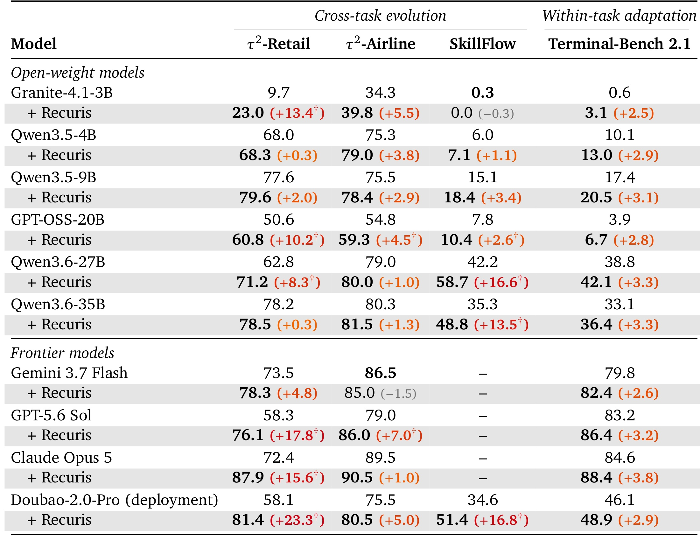
Table 1 的正确读法是先看“相同 backbone 的 reference agent”与“同一 agent 加 Recuris”这一对，而不是横向比较不同模型。37 个完成的 model-benchmark pair 中有 35 个点估计提高；未完成的 3 格是 frontier model 的 SkillFlow，没有被计入分母。显著大幅收益集中在有共享结构的 tau2-Retail 与 SkillFlow，例如 GPT-5.6 Sol 在 Retail 从 58.3 到 76.1，Claude Opus 5 从 72.4 到 87.9，Doubao 在 SkillFlow 从 34.6 到 51.4。表内也保留了边界：Gemini 在 Airline 为 -1.5，Granite 在 SkillFlow 为 -0.3，多个小幅增益没有置信区间排除零。因此“35/37 上升”是点估计覆盖面，不等于 35 个统计显著效果。不同基准使用的适配模式也不同：前三者有共享工具、政策或 task-family procedure，适合跨任务演化；Terminal-Bench 的 87 个任务缺少共同结构，13 次跨任务演化没有接纳 patch，作者才改用同一任务内的失败后适配。主表把两种模式并列，不能把它们视作同一个学习协议。
3.2 任务内 EM-WM 耦合：覆盖写操作，而非更早行动
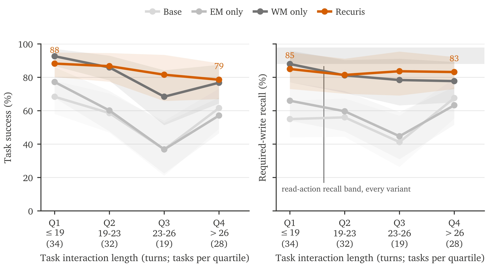
Figure 4 用所有 passing episode 的 per-task median horizon 固定四个长度分桶，避免把“提前放弃导致短轨迹”误当作任务简单。Recuris 在四个 quartile 都领先 base，差距为 17.0 到 44.7 个百分点，最长桶没有出现优势衰减。更关键的是右图与灰带的分离：所有 variant、所有长度桶的 read-action recall 都在 88.0% 到 97.9%，说明 Agent 通常知道该查什么；required-write recall 才随着配置明显分叉，Recuris 比 base 高 26.7 点。该证据支持“长程瓶颈主要在落实必要动作”，但它是 held-out 轨迹的分层重分析，不是人为操纵 horizon 的因果实验。
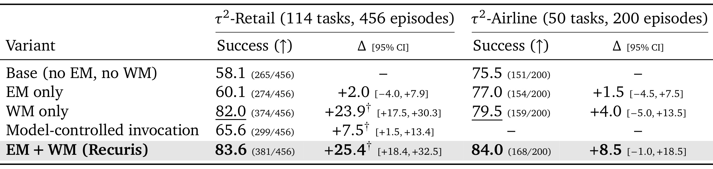
Table 2 显示 Retail 上 base 成功率 58.1%，EM-only 60.1%，WM-only 82.0%，完整 EM+WM 为 83.6%；相对 base，WM-only 的 +23.9 和完整系统的 +25.4 置信区间排除零，而在 WM 基础上加入 EM 只增加约 1.5 点。Airline 的点估计方向相同，完整系统 84.0% 对 base 75.5%，但仅 50 个任务使该列所有 interval 都包含零。这个表说明 verified working state 提供主要“层级提升”，experience 的附加价值依赖正确调用；不能据此说 EM 在所有领域都稳定带来显著增益。
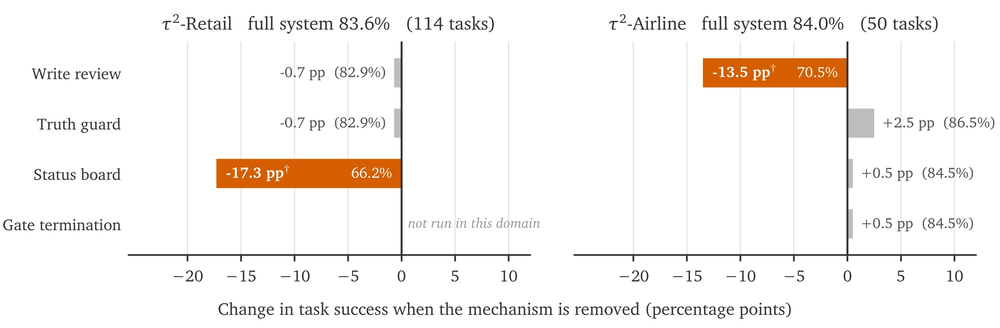
Figure 6 进一步拆开工作状态的四个机制。Retail 去掉 status board 损失 17.3 点，而去掉 write review 仅损失 0.7；Airline 恰好相反，去掉 write review 损失 13.5 点，而 status board 的变化只有 +0.5。truth guard 在两个领域都没有可分辨影响，尽管它拒绝了不少不受支持的完成声明，原因可能是写操作一旦错误执行，事后记录无法撤销环境变化。该 double dissociation 表明关键控制点取决于领域的失败时机，也解释了为什么作者不愿预先固定“永远优先修哪个组件”。
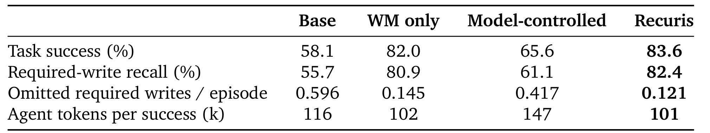
Table 3 在 tau2-Retail 上把 skill 内容固定后比较调用权。Model-controlled 与 Recuris 持有 byte-identical 的十条技能，前者每轮把整库放入上下文，后者只在拟执行写调用时交付匹配技能。Recuris 成功率 83.6%、required-write recall 82.4%、每 episode 漏写 0.121 次、每成功消耗 101k agent tokens；model-controlled 分别为 65.6%、61.1%、0.417 和 147k。值得注意的是 WM-only 成功率 82.0%，也高于全技能常驻的 65.6%，说明“提供更多技能文本”不能替代状态驱动的调用控制。
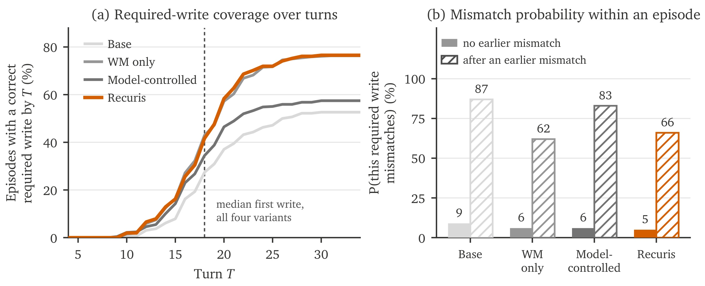
Figure 7(a) 显示四个配置首次正确写操作的 median turn 都是 18，Recuris 的曲线优势并非更早行动，而是在后续 turn 中让更多 episode 最终执行了正确写操作。Figure 7(b) 把写错概率按“此前是否已经写错”分层：无先前错误时四组只有约 5% 到 9%，一旦已经错误，后续 mismatch 上升到 62% 到 87%；Recuris 的条件概率仍有 66%，但它更少进入这一状态。机制解释因此是预防早期漏写或错写导致的级联，而不是缩短决策延迟。
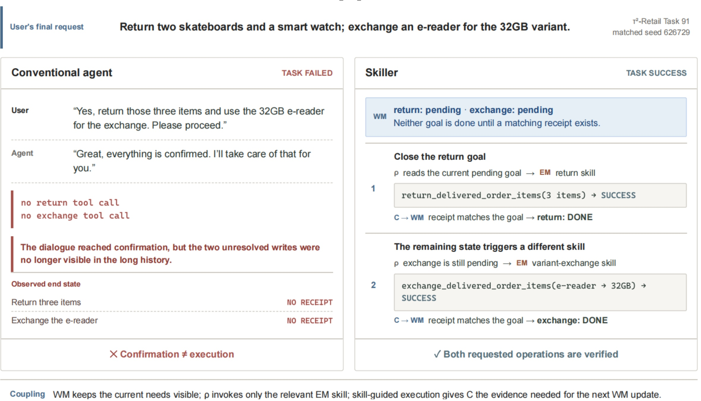
Figure 8 的 conventional agent 与用户完成口头确认，却没有发出退货和换货所需的两个数据库写调用，环境任务因此失败。Recuris 侧把两个 goal 持续标为 pending，在对应写节点分别调用退货与换货 skill，并只在 matching successful tool receipt 返回后改成 done。该图把式（5）的区别具体化：对话中的“好的，我来处理”不是 completion evidence，工具回执才是。作者明确把它当作机制案例而非总体效果，所以不能用单个 Task 91 推断全部基准收益。
3.3 结构化诊断、递归演化与跨模型迁移
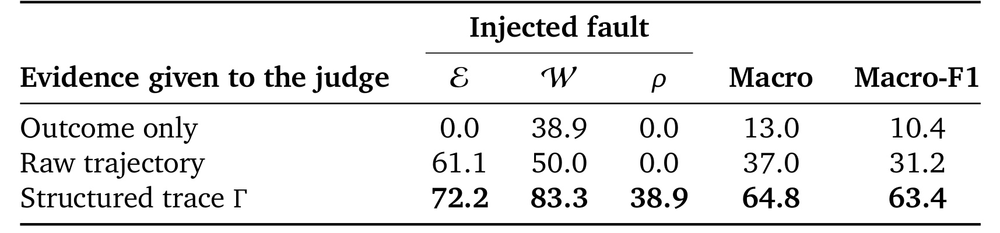
Table 4 人为向 $E$、$W$ 或 $\rho$ 注入已知故障，再让固定 judge 只看 outcome、raw trajectory 或 $\Gamma$ 来定位。Macro accuracy 从 outcome-only 的 13.0% 提高到 raw trajectory 的 37.0%，再到 structured trace 的 64.8%；Macro-F1 相应为 10.4、31.2 和 63.4。提升主要来自 transcript 看不见的 non-event：调用策略本该触发却没有触发时，普通日志没有“缺失事件”，而 $\Gamma$ 保存机制状态，使 $\rho$ 的 recall 从 0 提高到 38.9%。工作状态故障也从 raw trajectory 的 50.0% 提升到 $\Gamma$ 的 83.3%，因为 state timeline 记录了错误字段何时出现；skill 内容故障的提升较小，从 61.1% 到 72.2%，因为错误参数本来就可能暴露在对话中。该实验省略 checker fault，因为在 Retail 注入的 checker 故障没有改变 pass rate，不能构成可靠 caused failure ground truth。
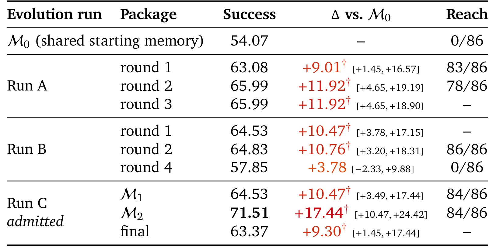
Table 5 在同一 86-task frozen split 上评估多个 package。共同起点 $M_0$ 为 54.07%；Run A 第二轮到 65.99%，第三轮持平；Run B 第二轮 64.83%，第四轮退到 57.85%，且该 package 对 86 个任务的 reach 为 0；Run C 接纳的 $M_2$ 达 71.51% 和 +17.44 点，最终 package 又回到 63.37%。因此递归可以在第二轮叠加收益，但并非单调优化。Reach 列尤其重要：一个 memory 如果因 binding 故障从未被调用，即使内容可能有效，外部评测也只会看到接近起点的结果。作者还报告九个 final package 的 required-write-recall delta 与 success delta 相关系数为 0.97，峰值分别为 +17.73 和 +17.44，这把收益再次指向正确写操作覆盖，而不是评测器漏洞或单纯延长轨迹。
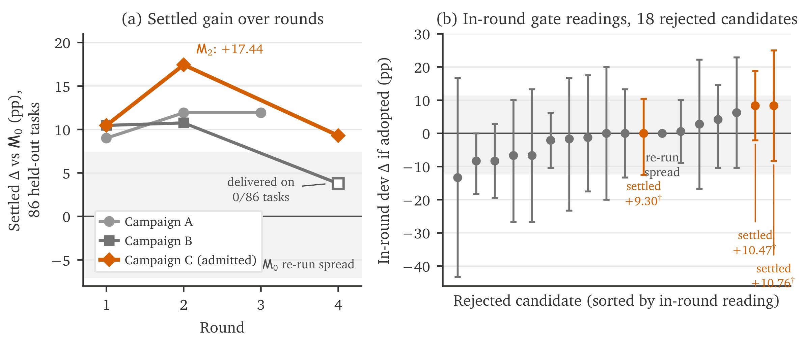
Figure 9(a) 将三条线路画在相同基准上，橙线先升到 $M_2$ 再回落，灰色空心点标出 Run B 第四轮“0/86 被交付”的异常，避免把它误读为自然收益递减。Figure 9(b) 展示 18 个当轮被拒候选：每个 dev interval 都包含零，其中三个后来在更大的 held-out split 上越过零。作者由此把 gate 描述为保守接纳规则，而非完美好坏分类器。小型 dev split 的区间可宽达约 30 点，降低回归风险的同时，也会产生拒绝潜在有效 patch 的假阴性。
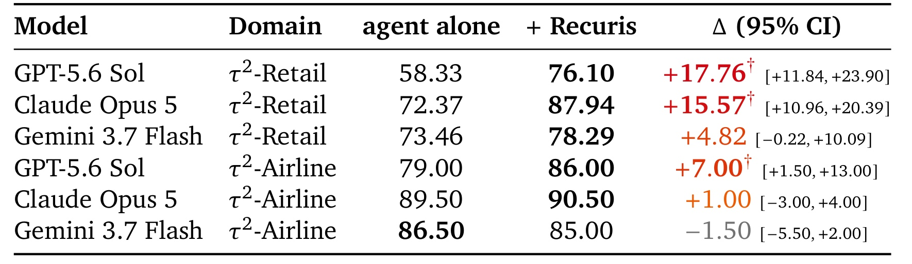
Table 7 将同一份在中等规模 deployment model 上演化的 memory 原样加载到 frontier model。Retail 上 GPT-5.6 Sol 提升 +17.76，Claude Opus 5 提升 +15.57，二者区间排除零；Gemini 提升 +4.82，但区间跨零。Airline 上 GPT-5.6 Sol 为 +7.00 且区间排除零，Claude 为 +1.00，Gemini 为 -1.50。可迁移的不是模型权重，而是外部流程纪律；收益也不随模型规模单调变化，更受目标模型剩余失败类型与 domain headroom 限制。
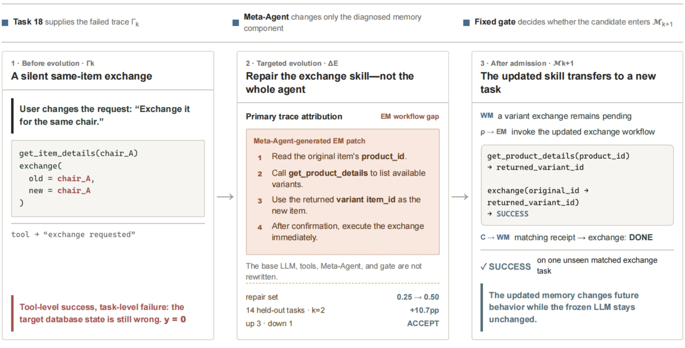
Figure 10 从一次 same-item exchange 错误开始：旧 workflow 复用原 item identifier 作为 replacement，工具虽返回 acknowledgment，最终状态却错误。Meta-Agent 从结构化轨迹把根因归到 experiential memory，只改 exchange skill，加入先检索合法 variant identifier 的步骤；候选通过修复与 held-out gate 后，在未见过的相似任务上成功。单案例的 0 到 100% 只是该任务的前后结果，不能当 aggregate gain，但它证明了 patch 的 scope、内容和后续行为都可审计。
3.4 单任务适配、重试混杂与成本边界
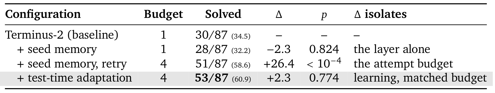
Table 8 是阅读 test-time adaptation 时最需要保留的边界。单次 Terminus-2 解出 30/87；加 seed memory 后为 28/87，差 -2.3 且 $p=0.824$；保持 seed memory 但给四次 retry 后变成 51/87，增加 26.4 且 $p<10^{-4}$；在相同四次预算下再允许 adaptation，只到 53/87，相对纯 retry 为 +2.3，$p=0.774$。因此 headline 的 60.9% 与 +26.4 点主要由尝试次数解释，不能被表述为 memory learning 的净效果。
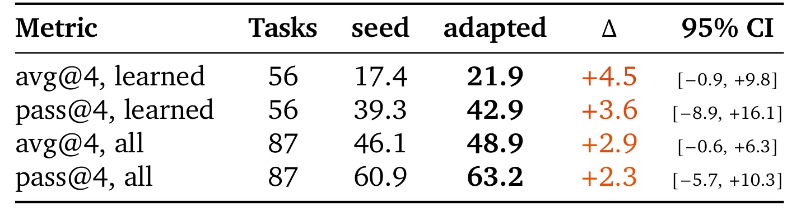
Table 9 改看四次不截断 rollout 的 avg@4 与 pass@4。对 56 个实际带有 learned skill 的任务，avg@4 从 17.4 到 21.9，+4.5；对全部 87 个任务，avg@4 从 46.1 到 48.9，+2.9。四个切面都为正，但 95% interval 全部包含零，作者只把它报告为一致方向而非确定效果。论文另有一个 16-rollout 深挖任务达到显著差异，但它仍是单任务证据；总体 test-time 学习是否稳定优于 budget-matched retry 需要更大样本确认。
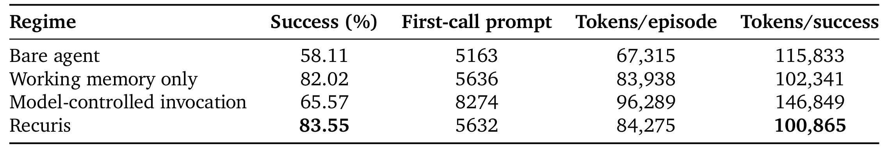
Table 12 排除了“Recuris 只是塞了更多上下文”的解释。Model-controlled 首次调用 prompt 为 8,274 tokens，比 Recuris 的 5,632 多 3,111；成功率却是 65.57% 对 83.55%，每成功 token 为 146,849 对 100,865，约高 46%。WM-only 的 82.02% 与 102,341 tokens/success 也接近 Recuris，呼应 Table 2 中 WM 承担主要增益。成本证据仍不完整：仿真 cost 字段为零，作者只能报告 token 而不能报告美元；Terminal-Bench 与 SkillFlow 的容器记录格式不同，也没有纳入统一汇总。
4. 总结
4.1 我的判断与工程启发
Recuris 最有价值的贡献不是“又一个长期记忆库”，而是把记忆变成一套可诊断的控制面：verified working state 决定当前缺口，event-triggered policy 决定何时交付经验，environment-backed checker 决定哪些进度可以提交，structured trace 决定失败后能否把修复缩到具体组件。实验最强的部分也与这条链一致：Retail 的 read recall 本来很高，差距出现在 required write；整库常驻比选择性调用更贵且更差；结构化轨迹显著提高故障定位；同一外部 package 能迁移到没有参与演化的 frozen model。它还把离线改进与在线执行清楚分开：演化期读取失败轨迹、生成并筛选 patch，部署评测期则冻结 memory，不在 test task 上继续学习。这个区分使收益能够归因于已接纳 package，也避免把测试时试错混入跨任务迁移结论。
从系统设计角度看，它更接近一套带状态机、事务提交和版本门禁的可审计控制系统，而不是任由模型自由改写提示词的记忆技巧；这也是其工程价值与安全责任同时增加的地方。
对生产 Agent 和推荐系统助手，首先值得迁移的是状态与证据契约，而不是照搬论文的十条 skill：把用户目标、约束、已执行外部动作、回执和 blocker 结构化；对高风险写操作设置 call-time interception；让“完成”必须绑定数据库、支付、库存或内容发布系统的真实 receipt。其次应把 memory reach 作为一级监控指标，因为 Table 5 表明内容正确但永不触发的 package 会伪装成收益衰减。最后，评测必须区分知识发现、动作覆盖、成功率和成本，避免只用终局 reward 掩盖漏写与错误级联。
4.2 局限、风险与后续跟进
这篇论文至少有四个边界。第一，35/37 是完成 pair 的点估计方向，不是 35 个显著效果；Airline 样本小，多数 interval 跨零。第二，SkillFlow 的 family template 在同一 family 内选择，task 侧是 in-sample，真正 out-of-sample 的只是 target model。第三，gate 的 10 到 14 个 dev task 分辨率有限，会拒绝后来在大 held-out split 上有效的 patch；无 gate 的安全性也只在有限轮次上观察。第四，memory 只增不减，八个 accepted patch 新增 51 条 skill、保留 17 对近重复，长期膨胀、冲突和投毒风险尚未解决。除此之外，test-time adaptation 的净增益未排除零，美元成本、跨容器统一 token 账本、隐私与恶意工具回执都没有完整评估。论文把 checker 当作可演化组件，却没有系统测试伪造、延迟或相互矛盾的 tool receipt；在支付、内容发布和推荐策略修改等高风险环境中，证据源本身必须具备认证、幂等和审计能力，否则 verified state 只是把错误从模型声明转移到不可靠的环境信号。
后续可优先做三件事。其一，复现 tau2-Retail 的 Table 3 与 Appendix Table 12，同时记录每轮真实注入 token、延迟、tool bounce 和 memory reach，验证收益是否来自调用时机。其二，为 gate 引入 anytime-valid 或序贯检验，并将“拒绝后 held-out 变好”的候选作为校准集，量化保守性与回归风险。其三，加入 skill merge、prune、版本依赖和冲突检测，在多轮长期运行中测试 memory 大小、检索准确率与任务成功率的共同变化。若面向推荐场景，还应在隐私隔离下测试跨用户记忆是否泄漏、状态字段是否把短期会话偏好误写成长期画像，以及线上写操作 checker 能否抵御伪造回执。